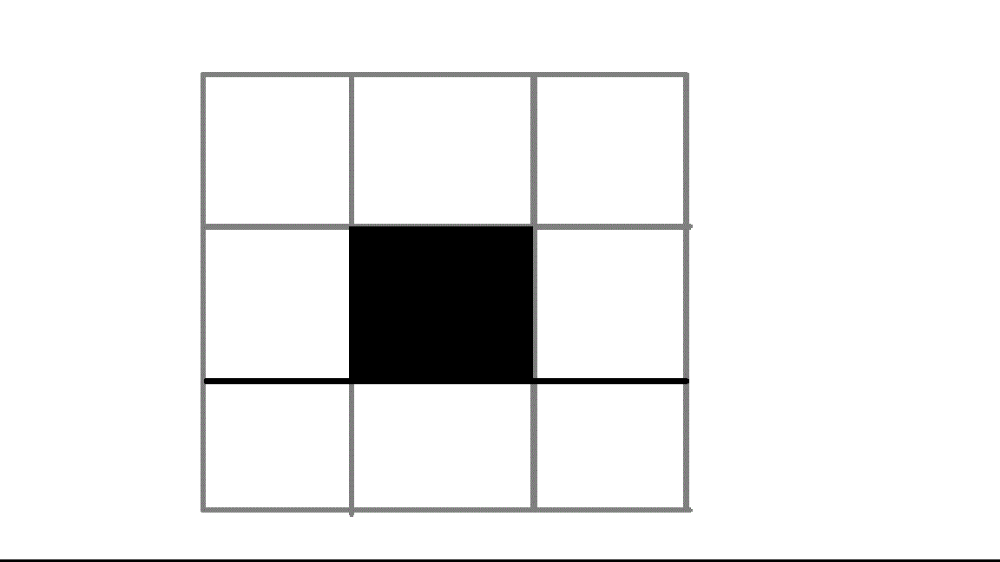
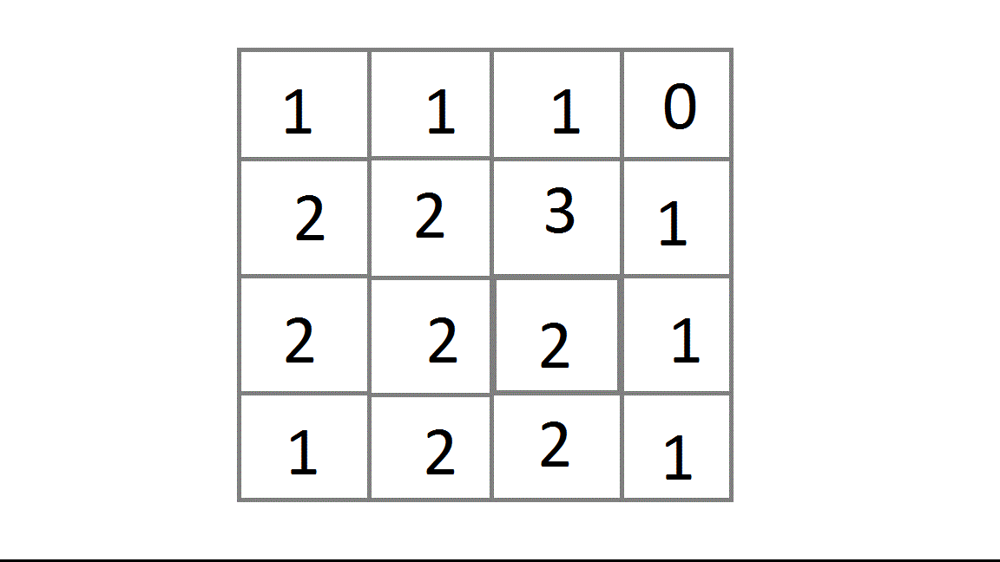
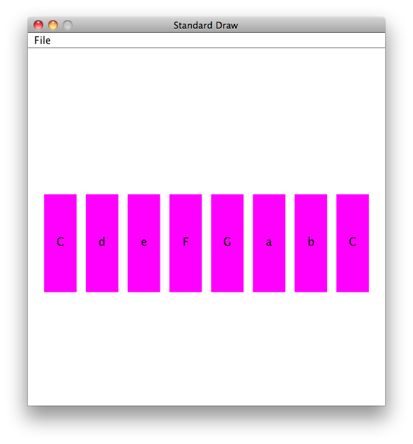

Extension for Module 7:
Extension 7.1: Conways Game of Life (8 points)
- Authors
-
Arman Guerra
Conway's Game of Life is a biology simulation that was developed by British mathematician John Horton Conway in 1970. It is designed to simulate cellular automation by creating an initial configuration of living and dead cells and observing how they evolve. Many interesting patterns have developed from the origins of the original simulation–producing patterns that pulsate, exist into infinity, and even glide like spaceships.
The rules of Conway's Game of life are as follows:
- If a living cell has fewer than two living neighbors, it dies of loneliness
- If a living cell has more than three living neighbors it dies of overcrowding
- If a living cell has two or three neighbors, it continues to live
- If a dead cell has exactly three living neighbors, it is resurrected by friendship
This set of rules can end up making some very interesting patterns. Below we have drawn out some of the patterns that are made by cells in Conway's game of life. Dead cells are represented by white squares, living cells are represented by black squares.
##Sample Patterns
###Still Lifes
 Block
Block
 Beehive
Beehive
 Loaf
Loaf
 Boat
Boat
###Oscillators
 Blinker
Blinker
 Toad
Toad
 Beacon
Beacon
 Pulsar
Pulsar
###Spaceships
 Glider
Glider
 Lightweight Spaceship
Lightweight Spaceship
###Perpetual Patterns
 Gosper Glider Gun
Gosper Glider Gun
 Block-Laying Switch Engine
Block-Laying Switch Engine
##Directions
In this extension, you will be responsible for building the simulator portion of Conway's Game of Life (henceforth known as Conway, or Life). You can then run the game on your own patterns or on patterns that we provide.
The code for this work can be found conway package of the extensions source folder. The Conway class is where you will be doing all of your work. ConwayTest is the tester for Conway and Main is what you will run when your code is finished to actually see your work happen. The Main class creates a GUI, Graphical User Interface, which allows you to see cells dying and coming back to life. Open Conway. You will create the following methods:
-
A
public Conway(int rows, int cols)constructor that specifies the dimensions of the Conway board. -
A
public int getRows()method, that is an accessor. -
A
public int getColumns()method, that is an accessorYour code should now pass the
getRowsAndColumnsTest() -
A
public void setLiveness(boolean b, int row, int col)method that takes in a row and a column, and whether that cell should be currently alive or deadIt would make sense that if a cell was alive, and it was represented by a boolean, it would be
true, and if it was dead it would befalse. You must come up with a data type that stores values in rows an columns to represent all of the cells. There are multiple ways to store this information, but think carefully about which one you choose, for this choice could save you time down the road. Just remember; you should not change anything within the test, and you must return what we ask you to return. -
An
public boolean isAlive(int row, int col)method, which returns whether the cell at that specific row and column is alive or dead. If the row and column are out of the bounds of that Conway object, then return false.Your code should now pass the
isAliveTest()and thesetLivenessTest(). -
A
public void clear()method, which sets every cell in the Conway object to dead.Your code should now pass the
clearTest() -
A
public int countLivingNeighbors(int row, int col)method, which considers the cell at a certain row and column, and returns the number of living neighbors that it has.The neighbors of a certain cell are considered to be the eight cells that are surrounding it. Your
isAlive()should help you with this. If you were to count the number of living neighbors of the living cell in the picture above, you would check the eight white squares that are surrounding it, and see if any of those cells were alive. In this picture, the live cell in the middle has no living neighbors, so according to the rules, it will die of loneliness. So in the next frame it will become a white square. 
This is a random group of cells  This picture shows the number of living neighbors that each of the cells in the above picture has Once you implement this method, your code should pass the
countLivingNeighborsTest() -
A
public void step()method, which executes a generation of life. What this means is that you take all of the cells from thethisConway object, and determine whether or not they will be alive in the next generation.It might be helpful here to create a
nextconway object with the same dimensions as thethisConway object. If you change the values of the original Conway object while you still havent determined whether other cells will be alive in the next generation, you might not count the wrong number of living neighbors. For instance, say cell A and cell B both alive, and are neighbors. If you determine that A will be dead in the next generation, and you kill it, when you go to count the number of living neighbors of B, it will have fewer living neighbors now than it should. If you create another Conway object, you can store the liveness of ALL of the cells on that Conway object, and then alter the values of thethisConway object at the end.If a cell will not be alive in the next generation, set it to
false. If a cell will be alive in the next generation, set it totrue. Make sure to account for all cells, and not just the ones that are currently alive. The rules of the Conway Game of Life are listed at the top of this page. This is where you will implement those rules.Your code should now pass the
stepTest()
In the code, we have public void yourDesginOne() and public void yourDesginTwo(). You
do not have to fill these out for the code to work, but if you want to create a pattern, you can create it here, and
you will be able to access it through the GUI. These will be used for the next extension
The following methods are provided for you, do not change any of these:
-
public void blinker()allows the GUI to create a blinker pattern -
public void fourBlinkers()allows the GUI to create a four-blinker pattern -
public void gosperGliderGun()allows the GUI to create a gosperGliderGun pattern -
public void glider()allows the GUI to create a glider pattern -
Other supporting classes, including the visualization code, are in the
labsupportsource folder. They are moved there to reduce the clutter in the extensions folder.
There is also an empty public void logAndCapture() method. You do not need to put anything in here right now,
this is the subject of the next extension
Once you have completed all the methods, you can run the Main method to play Conway's Game of Life.
To further debug your code, the visual interface allows you to take one step at a time. If the game is not working, use the debugger or print information helpful to diagnosing the problems you see.
###To Demo
Your code must pass all of the unit tests, and the GUI should work, and be able to display cells interacting with eachother.
Submitting your work
To submit your work, contact the instructor or a TA. They will walk you through the submission process. Be prepared to show them the work that you have done and answer their questions about it!
Extension 7.2: Conways Game of Afterlife - Automatic generation (3 points)
For this extension, you will be working with automatic code generation, which will save you time and energy if you want to save any of the cell mappings you create in Conway. In order to get credit for this extension, you must implement the functionality of logAndCapture() in Conway to capture the current living cells you have on the board and generate the appropriate Java code for creating those cells in the console.
For example, the Four Blinkers code is captured already, but if you were to generate code for it using logAndCapture() the result would look something like this:
Beginning of Log and Capture setLiveness(true, 1, 1); setLiveness(true, 1, 2); setLiveness(true, 1, 3); setLiveness(true, 1, 5); setLiveness(true, 1, 6); setLiveness(true, 1, 7); setLiveness(true, 5, 1); setLiveness(true, 5, 2); setLiveness(true, 5, 3); setLiveness(true, 5, 5); setLiveness(true, 5, 6); setLiveness(true, 5, 7); End of Log and Capture
The idea is that the code can be copied from the console, pasted into your Conway class, and when you choose the right menu item from the interface, the board will be initialized to replicate what you captured.
Once you have logAndCapture() working, use this new tool to automatically generate your own Conway patterns in myDesignOne(), myDesignTwo(), and myDesignThree(). For credit for this extension, these patterns should be both intriguing and potentially time-consuming to generate by hand.
Submitting your work
To submit your work, contact the instructor or a TA. They will walk you through the submission process. Be prepared to show them the work that you have done and answer their questions about it!
Extension 7.3: Project - Matrix (5 points)
- Authors
-
Arman Guerra
##Procedure
In the matrix package of the extensions source folder, implement the Matrix class. Every time you implement a method correctly, you will be able to pass one more unit test. We have provided and finished some methods. We ask that you do not change anything other than the methods listed below. Implement the methods with the following features:
-
A constructor that takes a two-dimensional array of type
doubleand saves it (as an instance variable) as the values of the matrix.To be safe, your instance variable must be a copy of the parameter, so that the contents of your Matrix's array cannot be changed beyond your control.
To copy the two-dimensional array, you must instantiate a new two-dimensional array and copy the original array's contents into your new array. Do not use
clone. It will only clone the first row of the array, and the rest of the rows will be left empty. -
An
arraysAreEqual(double[][] one, double[][] two)method that compares the two arrays to see if they are the same. The two arrays are the same if:- They agree in the size of both of their dimensions.
- The contents of the two arrays are the same.
The
.equals(Object)method included with this lab calls yourarraysAreEqualmethod, so thatMatrixequality of two matrices depends on the contents of those matrices.Until this method is working, the rest of the JUnit tests will not work properly.
-
A
toStringmethod that neatly shows the contents of the matrix. In your string use "\n" to insert a line break, and use "\t" where you want a tab between elements. Include JUnit tests that print these strings to the console (usingSystem.out.println) for visual inspection, in addition to any automated tests you perform. Your toString method will come in handy for debugging the other methods. -
A
scaleRowmethod that takes a row number (an integer) and a scale factor (a double), and multiplies that row by the given scale factor. This method does not return anything. It just modifies the matrix.In this lab, rows are numbered as arrays are indexed. Thus, the top row in the matrix is row 0, and the bottom row is numbered one less than the number of rows in the matrix.
-
An
addRowsmethod that takes two row numbers as parameters, and adds the two rows together, storing the result in place of the second of the two rows. -
A
plusmethod that takes another Matrix as its parameter and returns the matrix that results from adding this matrix by the given one. Matrix addition is only valid when the two matrices are the same size in both dimensions, so yourplusmethod should throw an IllegalArgumentException when this is not the case. -
A
transposemethod that takes no parameters and returns a new matrix that is the transpose of this one. Recall that the columns of the transposed matrix have the same values as the rows of the original matrix. -
A
timesmethod that takes another Matrix as its parameter and returns the matrix that results from multiplying this matrix by the given one. Recall that when you multiply two matrices A and B, the value in the cell at row r and column c of the resulting matrix is the dot product of A's row r with B's column c. Also recall that matrix multiplication is only valid when the number of columns of the first matrix is equal to the number of rows of the second, so yourtimesmethod should throw an IllegalArgumentException when this is not the case. -
An
exchangeRowsmethod that takes in two rows i and j and exchanges the two. This modifies the matrix and does not return anything.
##To Demo
Your code must pass all of the unit tests.
Submitting your work
To submit your work, contact the instructor or a TA. They will walk you through the submission process. Be prepared to show them the work that you have done and answer their questions about it!
Extension 7.4: Gaussian Elimination (6 points)
##Procedure
###Overview
Note: This assignment can only be completed after completing the previous “Project: Matrix” extension.
You will create a Gaussian class in the matrix package. Inside of it you will have a public Matrix getSolution() method that solves a series of equations by Gaussian elimination as described in this Wikipedia article.
###Directions
-
Create a constructor in the
Gaussianclass that takes in twoMatrixes, anxn Matrixthat represents the coefficients in the set of equations, and anx1Matrixthat represents the constants. -
Write a
getSolution()method that takes an instance of aGaussianobject and finds and returns the solution of the system of equations that it represents. As the article describes, you must achieve this by exchanging, scaling, and adding rows until the coefficientsMatrixis the identity matrix. Remember that every time you perform one of those operations, you must do it to bothMatrixes. You will then return the updated constantsMatrix.HINT: try working on the bottom-left side of the
Matrixfirst. Once you get it in echelon form, working on the top-right side is very similar.You can assume that there will only be one solution to the system of equations that we provide to you.
NOTE: Your solution to this extension must be a general one. In other words, it cannot be restricted to solving 3x3 (or 3x4 if you count the sums column) matrices. It must be able to solve systems of equations with arbitrary numbers of parameters, provided that the length and width of the coefficients matrix equal the length of the sums matrix and the width of the sums matrix equals one.
###To Demo
You must pass the GaussianElimination unit test.
Submitting your work
To submit your work, contact the instructor or a TA. They will walk you through the submission process. Be prepared to show them the work that you have done and answer their questions about it!
Extension 7.5: Objects to Support Music (9 points)
##Overview:
There are several extensions that involve the use of music. Without some nicely articulated objects in place, the code for those extensions would become unwieldy.
This extension involves your completing some classes that have already been designed. Each class has an API described here and in the class's JavaDoc comments. A JUnit test case is written both to help you create a correct implementation of the design and to demo your work for credit.
##Before Starting:
- Update your workspace and look for the
chordspackages in theextensionssource folder, which include the following
chords.gui
This package has objects that are provided for your use. You do not need to make any changes to these classes.
Later, the class you will most likely use from this package is TwoDimensionsionalGUI, which helps applications use the current position of the mouse in the Sedgewick drawing panel as a control mechanism.
For now, run the provided TwoDimensionalGUIExample and watch the effects of moving your mouse around in the window. This code uses the TwoDimensionalGUI's update() method in an event loop, such as the ones you have seen before that accomplish animation.
chords.testing
This package contains the tests for the code you will develop. Most of them are JUnit tests, but one (PlayTest), is an application that you will run to test your code.
chords.music
This package contains skeleton classes for the code you will develop. Follow the instructions below, in the order given, to simplify your efforts.
##Development Sequence
Some general guidelines follow:
-
Pay attention to the user story told about each class. Recall that each has-a indicates the need for an instance variable.
-
Name your variables appropriately, and protect them from access by other classes by declaring them
private. -
Where appropriate, include
finalon the declaration of instance variables, so that their values cannot be changed after the constructor finishes. -
Create meaningful
toString()methods. Make sure these do not produce too much information. For example, if a class contains a large array of values, those should not be included in thetoString()result. Instead, include the size of the array in thetoString()result if it could be useful.
OK, now follow the steps below, in order, to develop the classes for this extension:
-
Open the
Samplesclass as we will complete this class first. -
Take a look at the first constructor in
Samples- the one whose signature isSamples(double[]).A
Samplesobject has-adoublearray of samples. This constructor takes in such an array, and the constructor must capture the array by making a copy of its values to be retained as an instance variable.This is a bit unusual: you would normally capture an instance variable
valby writingthis.val = val, but for an array, that would retain the reference to the array without copying its values. While the reference is sufficient to access the array's values, there is no guarantee that code outside theSamplesclass won't change the array after the constructor returns.To guard against this, your constructor must make a copy of the array's values. As a reminder, this involves:
-
Declaring the instance variable to be an array of
doublevalues. -
In the constructor, instantiating the array the be the same size as the parameter array's size.
-
After instantiating the array, writing a loop to copy the values one-by-one from the parameter into the instance variable copy.
The
testConstructor1()test will not pass until you have also completedgetNumSamples()andgetSample(int i), so once you have completed the constructor, we advise that you complete these two simpler methods before unit testing again. -
-
Implement the
double getSample(int)method, which should return the value of samplei. Note thatgetSample(0)returns the first value, because (like most things in Java), we begin our samples at index0. -
Next complete the
getNumSamples()method by returning the length of the instance-variable array of samples.Run the unit tests, and the
testConstructor1()unit test should pass at this point, as well as thegetNumSamples()unit test -
The second constructor for
Sampleshas signatureSamples(int). It does not accept an input array, but instead it should instantiate the instance variable to be an array of the specifiedlength, all zero. Such an array is not not directly useful or suitable for play-back, but is useful as a base for composing or extending other samples. Java does initialize all newly instantiateddoublearrays to zero automatically.This constructor also requires
getNumSamples()andgetSample(int i)to be completed before it will passtestConstructor2. -
Complete the
play()method by having Sedgewick'sStdAudioclass play the instance-variable array of samples. -
Complete the
toString()method to return a useful string to describe the contained samples. -
Complete the
getMax()andgetMin()methods so that they do what their comments say they should do.Run the unit tests, and the
testMax()andtestMin()unit tests should pass at this point. -
Complete the
concat(Samples)method, which takesthissequence of samples and anothersequence of samples and return a new sequence that is the concatenation of the two. Note that this must return anew Samplesobject. The current object must not be changed!Run the unit tests, and the
testConcat()unit test should pass at this point. -
Complete the
combine(Samples)method, which takesthissequence of samples and anothersequence of samples, and sums them, element-by-element, to form a new sequence of samples. If one sequence is shorter than the other, it is as if the shorter sequence had zeros as the sums are computed.Run the unit tests, and the
testCombine()unit test should pass at this point. -
OK after all that work, open
Pitchand you will see that this class is done for you.Run the
PitchTestunit tests, and they should pass at this point. -
Open the
SingleToneclass. ASingleTonehas-a frequency which should be retained as adouble. -
Complete the constructor for
SingleTone. -
Complete the method
getSamples()by generating samples at the specifiedamplitudeandduration. Recall that aSingleTonehas-a a frequency, so the frequency used for the samples should be stored as an instance variable in your class. -
Complete the
getOverTone(double)method, which returns a newSingleToneobject whose frequency is the specified mutliple ofthisone's frequency. -
Complete the
getOverTone(int,int)method, which should return its result by reduction to thegetOverTone(double)method. This means that you should return the result ofgetOverTones(int,int)by returning a suitable call ofgetOverTone(double).Run the unit tests, and the
testOvertones()unit test should pass at this point. -
Open
DiatonicScale. This class represents notes that form a major scale, such as the natural (usually, white) keys do on a piano. ADiatonicScalehas-a startingPitch, which should be retained as aPitchreference.We could have designed this class to retain the starting pitch as an integer, but with the richer object
Pitchwe should use it instead.Why?
A
Pitchobject can easily compute other related pitches, and return its representation as a frequency. We could carry out these computations on any integer, but by having it already programmed inPitch, we should use that object to avoid code duplication, avoid work, and increase reliability. -
The first constructor is already completed in terms of the second one, so you don't have to worry about the first constructor.
-
The second constructor must be completed, but it simply stores its incoming parameter in the instance variable you provisioned above.
-
Let's look at
getPitch(int). This method returns thePitchthat is the specified diatonic distance from thisDiatonicScale's starting pitch. What makes this tricky is that the diatonic notes are not evenly spaced. This can be most easily understood by looking at the chromatic distances between the natural keys on a piano. The following table shows the relative chromatic distances between the notes of a diatonic scale:Example in
key of C majorDiatonic
offset`Chromatic offset </TR>
from previous
diatonic noteC 0 N/A D 1 2 E 2 2 F 3 1 G 4 2 A 5 2 B 6 2 C 7 1 -
Open
Triadclass. ATriadhas threeSingleTones. -
Complete the constructor for
Triad. The constructor takes in aDiatonicScaleand anint, which is the diatonic offset of the root of the triad.The other two pitches are 2 and 4 diatonic offsets away from the root.
Use the
getPitch(int)method of the specifiedDiatonicScaleto find the root, second, and thirdSingleTones of thisTriad. -
Complete
getTones()which returns an array consisting of theSingleTones of thisTriad, in order. -
Complete
getSamples(double,double), which returns aSamplesobject of the triad's tones at the specified amplitude and of the specified duration.
- Note that the specified amplitude must be divided (evenly) among the three
SingleTones. - All three
SingleTones of the triad should sound simultaneously and last for the specified duration. - This method can be written in a single line of code using objects you have already created and tested.
Run the unit tests for Triad and they should pass at this point.
For your final test, run PlayTest and choose a song. You should be able to hear the song repeat and with the mouse you can change its pitch and its speed.
Submitting your work
To submit your work, contact the instructor or a TA. They will walk you through the submission process. Be prepared to show them the work that you have done and answer their questions about it!
Extension 7.6: Chord Organ (4 points)
You will use the Triad and other classes you have
developed to make a simple chord organ that resembles the following:

The goal of your work is to hear the a diatonic triad play in the C major scale when your mouse enters the correspondingly marked rectangle.
##Procedure
-
Open the
ChordOrganclass in thechordspackage. This is where you will write your code for this extension. -
Arrange for a screen such as the one shown above to be drawn, and detect mouse entry into the specified rectangles. To help you with this, consider the
BoundingBoxGUIExampleclass in thechords.guipackage:- Run
BoundingBoxGUIExampleas an application and observe what happens when your mouse enters the displayed rectangle. - Read the comments and the code for
BoundingBoxGUIExample, and get help if anything is unclear. - Now try to create the GUI shown above.
Your code will be shorter and easier to write if you think through how to represent the 8 keys shown in the GUI. You could use many separate variables, but if you think abstractly, you will use arrays to represent the values of interest.
- Run
For the steps of the development described below, however, you must use the specified classes.
-
Construct a
DiatonicScaleinstance in the key of C:DiatonicScale ds = new DiatonicScale(3);This makes a diatonic scale object with high C as its base note.
-
To make a given triad at offset
i, use
Triad t = new Triad(ds,i);
-
You can get samples from that
Triad(usingTriad'sgetSamples(double,double)) of an amplitude and duration of your choosing and then cause them to be played using theSamplesclass. -
Demonstrate your work to a TA using a computer with sound enabled.
Submitting your work
To submit your work, contact the instructor or a TA. They will walk you through the submission process. Be prepared to show them the work that you have done and answer their questions about it!
Extension 7.7: 6-1-4-5 - How To Be Famous (8 points)
Much has been written about the tendency for musicians from Pachelbel to Pink to write songs based on a common chord progression:
In response of this, the Axis of Awesome has realized that the only barrier to their becoming famous is their lack of a four-chord song, as documented extensively in this amazing video and this other amazing video.
Axis of Awesome needs your help to record their soon-to-be-hit four-chord song.
In this extension, you use the chords.music classes you developed above to create a 4-chord song. The song consists of two Samples of music, background and tune, which are combined throughout to make a song. As the song plays, you can control how much of what you hear is background and how much is tune.
##Overview
-
Open the
SixFourOneFiveclass in thechordspackage. Your work for this extension will be done in this class. -
A
TwoDimensionalGUIclass is provided for your use in thechords.guipackage.To see how it works
- Run the
TwoDimensionalGUIExampleand move your mouse in the window to control the size and shading of the displayed circle. - Read the constructor and the code in the class.
- You can instantiate this class yourself and use it to select the amount of background and tune present in your sound output.
- Run the
-
The code you write will resemble the example GUI and all other programs based on an event loop.
-
Each iteration of your infinite event loop prepares four seconds of sound for output.
- These four seconds are one musical measure.
- Each measure has four beats
- Each second of time corresponds to one beat of the four-beat measure
Thus, each measure goes through the four chords of your four-chord song, with one second spent on each chord.
-
The music you generate consists of background (chords) and a tune:
Background
The background of your song is a constant progression of Six-Four-One-Five chords. These chords can be generated using the classes you have above as follows:
- If you construct a
DiatonicScalewith starting pitch3, then its scale is C major starting on high C. - Although the chord pattern is called Six Four One Five, this assumes the root chord is One. For us, the root chord is
0, so the diatonic offsets for our chords are really5 3 0 4. - That
5chord is a bit high and sqeaky, so we lower it by an octave, subtracting 7 diatonic steps to get-2. The resulting chord sequence in terms of diatonic offsets is
-2 3 0 4- If we name the
DiatonicScaleof interestds, then the triads of interest are as follows:
Chord Name in C major Triad Six a minor new Triad(ds, -2) Four F major new Triad(ds, 3) One C major new Triad(ds, 0) Five G major new Triad(ds, 4) Because
Triads are constructed relative to aDiatonicScale, theTriadinstantiations above create Six Four One Five for whatever key theDiatonicScaleobject was constructed.The background consists of rotating among the above chords, with each chord playing for one second (a quarter note).
Tune
The tune is generated randomly, with each note having random pitch and duration:
Duration
- Each chord of the background lasts for one second, and you need to generate a one-second tune to be combined and played with the background.
- You could pick a single note for the one second, but that would not be rhythmically interesting.
- Instead, let's begin with a nominal beat that is one second in duration.
- That beat could be subdivided into two beats of half the original duration, so two half-second notes.
- The process of subdividing could continue to obtain smaller rhythmic units such as four quarter-second notes, eight eighth-second notes, etc.
- No matter how much we subdivide the beat, the resulting rhythmic units sum to one second when played continguously.
- If the above process is not somewhat random, the resulting rhythms would still be quite regular and uninteresting.
Your challange is to devise a method for randomly breaking a one-second beat into smaller units. The units should not always be the same. For example, one way to divide one second might result in the following, played consecutively:
- 2 eighth-second notes
- 1 eighth-second note
- 2 sixteenth-second notes
- 1 quarter-second note
- 1 quarter-second note
Pitch
Once one of the above rhythmic units is complete, its pitch should be chosen from a diatonic scale in the key of C major. Construct a
DiatonicScale(3)object and use itsgetPitch(int)to get a random diatonic pitch from the C-major scale. - If you construct a
Submitting your work
To submit your work, contact the instructor or a TA. They will walk you through the submission process. Be prepared to show them the work that you have done and answer their questions about it!